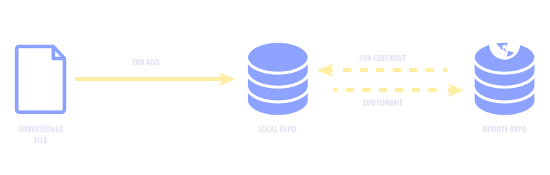
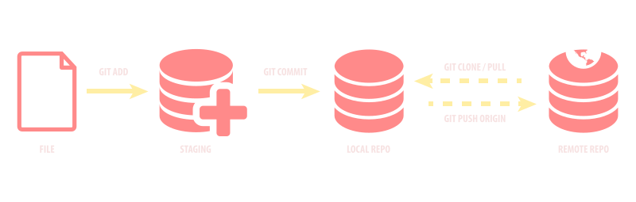

Git Basics
Ivan Djordjevic ~ UX Architect @ NCI
Git
Author: Linus Torvalds
Initial release: 7 April 2005
SVN Workflow

SVN Workflow
#!/bin/bash
# Add a new file
$ svn add %filename%
# Make the changes
# Get the latest changes before commiting
$ svn checkout
# Commit to Repo
$ svn commit -m "changes"
GIT Workflow

GIT Workflow
#!/bin/bash
# Add to staging / New File
$ git add /filename/
# Make the changes
# Commit to Local Repo
$ git commit -m "changes"
# Get the Remote Changes
$ git pull origin
# Push to Remote Repo
$ git push -u origin /branch/
SVN vs GIT

Get Repo from Remote to Local
#!/bin/bash
# SVN
$ svn checkout /url/
# GIT
$ git clone /url/
Get latest from Remote to Local
#!/bin/bash
# SVN
$ svn checkout /url/
# GIT
$ git pull origin /branch/
Add Unversioned File
#!/bin/bash
# SVN
$ svn add /filename/
# GIT
$ git add /filename/
# GIT add all files
$ git add .
Add to Staging
#!/bin/bash
# SVN
# GIT
$ git add /filename/
# GIT add all files/folders
$ git add .
# GIT add all changes/renames/removes
$ git add . -f
Ignore Files/Folders
#!/bin/bash
# SVN
$ svn propedit svn:ignore /folder name/
# GIT - create file ".gitignore"
# add file/folder names (sep. line)
Commit
#!/bin/bash
# SVN commits to Local AND Remote
$ svn commit -m "changes" /filename/
# GIT commit to Local Repo (only)
$ git commit -m "changes"
Push to Remote Repo
#!/bin/bash
# SVN
# GIT
$ git push -u origin /branch/
Create Branch SVN
#!/bin/bash
# SVN
$ svn copy /repo-url/trunk /repo-url/branches/new-branch -m "Creating a branch of /trunk."
$ svn checkout /new-branch-url/
Create Branch GIT
#!/bin/bash
# GIT branch from current
$ git checkout -b /new-branch/
# GIT branch empty
$ git checkout --orphan /new-branch/
# GIT: if you created a branch in your local, you need to push to remote
$ git push -u origin /new-branch/
# GIT: if you created a branch in your remote, you need to pull to local
$ git pull origin /new-branch/
Switch Branch
#!/bin/bash
# SVN
$ svn checkout /new-branch-url/
# GIT
$ git checkout /new-branch/
Merge Branch
#!/bin/bash
# SVN
$ svn merge /master-branch-url/
# GIT merge branch1 to master
$ git checkout branch1
# make changes, commit to branch1
# GIT switch to master
$ git checkout master
# merge
$ git merge branch1
Rename File/Folder
Use the FORCE wisely!
#!/bin/bash
# SVN - go to Repo Browser
# Rename the file
# Checkout
# GIT - rename file in local, commit, push
$ git add -f /filename/
$ git commit -m "I have renamed da file"
$ git push -u origin /branch/
Remove File/Folder
Use the FORCE wisely!
#!/bin/bash
# SVN - go to Repo Browser
# Remove the file
# Checkout
# GIT - remove file in local, commit, push
$ git add -f /filename/
$ git commit -m "I have removed da file"
$ git push -u origin /branch/
Git status CLI
- Your new best friend
- Where are your files?
- What's going on?
Best Practice - Folders
- db
- docs
- sprints/stories
- release notes
- front-end
- back-end
- test
Best Practice - Branches - Features
- sprint1-story01-feature01-mockups
- s1-st01-f02-name
- s1-st02-f01-name
- s2-st01-f01-name
- s2-st01-f02-name
- deploy-dev
- deploy-st
- deploy-at
- deploy-live
Best Practice - Deployment
1 Commit 1 Release
- deploy-dev
- deploy-st
- deploy-at
- deploy-live
CI hook to Branch Commit
Common Mistakes
SVN: checkout before commit
GIT: pull origin before commit/push
Conflicts
- Make a copy of YOUR FILES
- CLONE Fresh copy from remote
- APPLY your changes
- COMMIT && PUSH
Shortcut
#!/bin/bash
# DO-DA-HARD-WORK
# Get ready to Commit
$ git pull origin /branch/ # Get Latest
# CHECK CONFLICTS
$ git add . -f # Add/Rename/Remove All
$ git commit -m "changes" # Commit to Local
$ git push -u origin /branch/ # Push to Remote